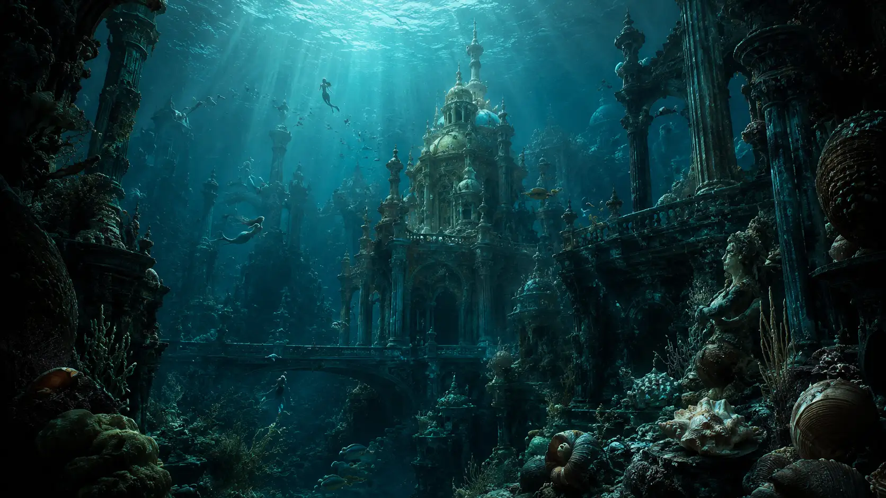
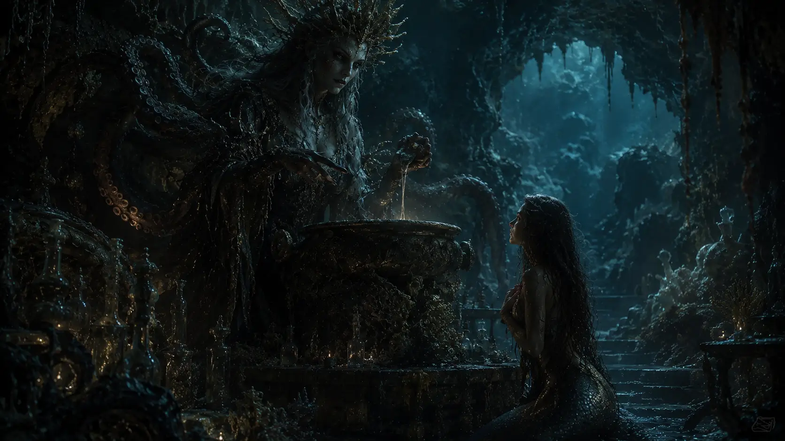
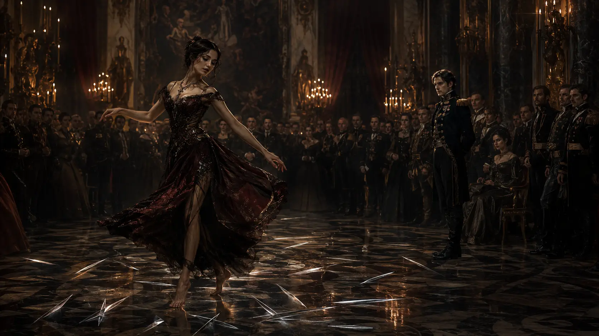
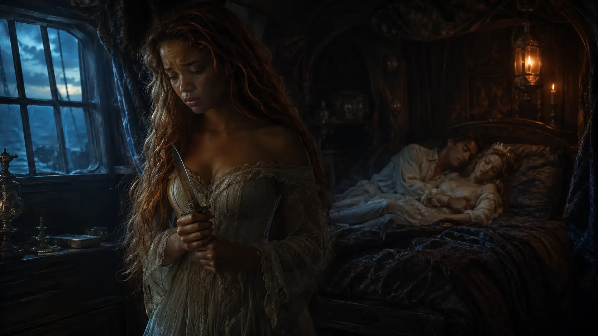
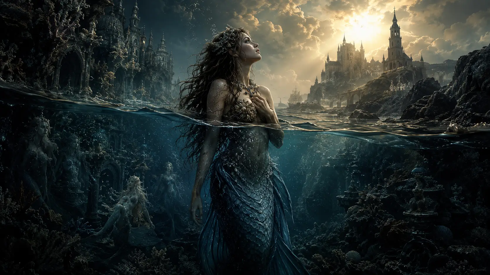
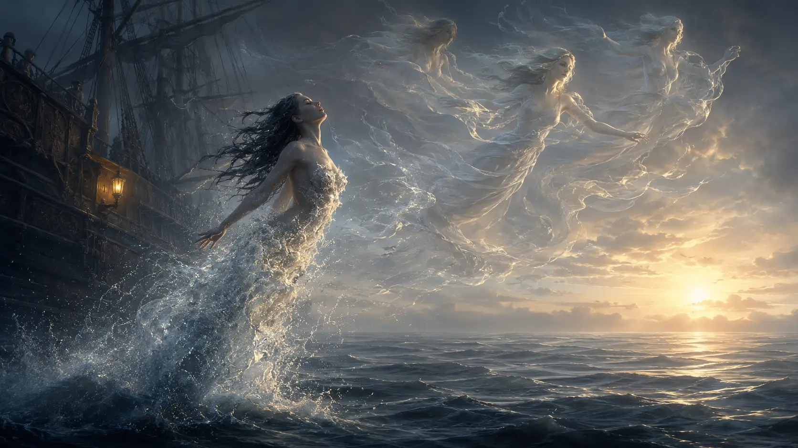
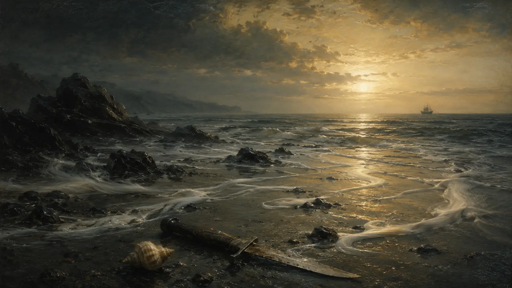

Era uma vez...
Uma jovem que acreditou que precisava abandonar a voz, a família e o próprio corpo para merecer uma alma e ser amada.
There are stories that are not simply modified over time. They are domesticated. Their roughest parts are trimmed, their most awkward questions are replaced with comfortable answers, and their endings are rearranged so that no one has to remain silent after the last page. Sadness turns into adventure. Loss becomes an obstacle. Suffering comes into existence only to prepare an inevitable reward.
This is how The Little Mermaid entered the modern imagination. Today, when we think of her, we almost immediately see a luminous ocean, funny creatures, memorable songs, a rebellious young woman, and a love strong enough to unite two worlds. But the mermaid created by Hans Christian Andersen did not live in a story about conquering a prince. She lived in a story about desiring what she might never possess.
Love was there, no doubt. But not as salvation. It was there as desire, deception, hope and wound.
The original little mermaid doesn't just lose her voice. She gives up a part of herself without any guarantee of being loved. She does not receive a human body as a gift, but as a continuous experience of pain. She does not defeat the witch. She does not conquer the prince. She does not return home. And when she finally receives the opportunity to save her own life, she must choose between surviving and destroying the one for whom she sacrificed everything.
She chooses not to kill him.
And she disappears into the sea.

A realm where no one possesses a soul
At the bottom of the sea, the little mermaid lives with her father, grandmother and five older sisters. Andersen's undersea kingdom is neither miserable nor incomplete. It has gardens, parties, beauty, music and a history of its own. Mermaids can live for three hundred years, much longer than humans. When their existence ends, however, they do not go elsewhere. They dissolve in sea foam.
This difference deeply disturbs the protagonist. Humans live a short life, but they carry within them something that sea creatures do not have: an immortal soul. According to the religious universe of the tale, this soul continues to exist after the body dies and rises to regions that mermaids could never reach.
The little mermaid doesn't just want legs.
She wants continuity.
She does not wish to disappear.
This detail transforms the whole story. The prince is important, but he's not just the handsome boy she watches from a distance. He represents a possibility of passage between two forms of existence. According to what she is told, a mermaid could only receive a soul if a man loved her more than his own parents, united his life with hers, and shared with her a part of his eternity.
Love, in this world, is not just feeling. It is a metaphysical door. And that door can only be opened by someone else.
There is a deep cruelty to this condition. The young woman may desire a soul, abandon her family, transform her own body and endure unimaginable pain. Still, the final result depends on whether she is chosen. Her salvation is placed in the hands of someone who doesn't even fully understand who she is.
Perhaps the first great violence of the tale is the idea that what is most precious in someone needs to be granted by the love of another person.
The girl who looked up
Since she was a child, each of the sea princesses receives a small garden. The older sisters decorate theirs with objects taken from sunken ships. The youngest organizes the garden differently. In it, she places flowers as red as the sun and a marble statue representing a beautiful human boy.
Even before meeting the prince, therefore, she already contemplates an image of the world from above. While the others are satisfied with the wonders of the ocean, she listens to stories about cities, birds, forests, churches and stars. There is a restlessness in her that is difficult to explain. It is not exactly contempt for her origins. It is the feeling that the reality in which she was born, although beautiful, does not contain everything she is capable of desiring.
When mermaids turn fifteen, they are allowed to rise to the surface. Each sister returns with a different memory. One sees an illuminated city. Another watches the sunset. Another finds ships and icebergs. The little mermaid listens to all these stories with a kind of silent hunger.
When her turn finally comes, she finds a ship in celebration. It's a prince's birthday. She watches him unseen, fascinated not only by his beauty but by all that he represents: the human world, the surface, the unknown, and perhaps the possibility of an existence that doesn't end in foam.
Then the storm hits.

She saves the one who will never know he was saved by her
The ship breaks apart. The prince is thrown overboard and begins to sink. The little mermaid dives, holds his body and keeps him above the waves during the night. Then she takes him to the beach, near a temple, and remains hidden while a young human girl approaches.
When the prince wakes up, he sees this other girl.
The mermaid watches everything from afar.
He never realizes that it was a sea creature who saved his life. Her first great gesture of love happens without witness, without recognition and without gratitude. The young woman who will sacrifice herself for him begins her relationship by being erased from her own history.
This mismatch will be decisive. The prince associates his salvation with the young woman found on the beach. The little mermaid, unable to reveal what happened, comes to love someone who is grateful for someone else. She possesses the truth, but she does not possess a voice capable of making it exist before him.
There has been no magic yet, but the silence has already begun.
The mermaid returns to the ocean transformed by the experience. She finds out where the prince's palace is, repeatedly approaches the coast and observes human life from afar. The more she knows that world, the more unbearable the idea of staying outside of it becomes.
When she asks her grandmother if humans also die, she receives an answer that reorganizes her desire. Yes, they die long before mermaids. But they have an eternal soul.
From that moment on, the prince and immortality become inseparable in her imagination. She doesn't just want to be loved. She wants to be human enough not to disappear.
The witch doesn't lie
In modern versions of fairy tales, the witch often deceives. She offers a seemingly advantageous agreement and hides its consequences. Andersen does something more disturbing: his sorceress explains the price clearly.
The little mermaid searches for the sea witch crossing a region surrounded by deformed creatures and polyps that grab everything that passes. The journey already works as an anticipation of what will come. To reach the human world, she must traverse a territory where bodies are captured, twisted, and incorporated into something bigger.

The witch knows what the young woman wants before she even speaks. She prepares a potion capable of transforming her tail into legs. But the transformation will not be smooth. The mermaid will feel as if a sword is going through her body. Afterwards, each step will be similar to walking on sharp knives.
Still, she will retain such an extraordinary grace that no one will notice the pain behind her movements.
This is perhaps one of the most brutal elements of the tale: the suffering will be invisible precisely because she will continue to look beautiful.
Everyone will see her lightness.
No one will see the blades.
In addition, the transformation will be irreversible. After leaving the sea, she will never be able to return to her father's palace or be reunited with her family as before. If the prince marries someone else, the mermaid's heart will break the next morning and her body will dissolve into foam.
The payment demanded by the witch is her voice.
Not just an abstract song. The witch cuts out her tongue.
The young woman loses precisely what she had most extraordinary. The voice that enchanted the underwater kingdom, the ability to tell who she was, explain the rescue and reveal her story disappear the moment she decides to look for love in the world of men.
The sorceress does not need to deceive her. Desire has already done that work.
The beauty of those who are stepping on knives
The little mermaid drinks the potion near the prince's palace. The pain is so intense that she loses consciousness. When she awakens, she has human legs and finds the prince before her.
He is enchanted.
The young woman cannot explain her name, her origin or the reason for being there. She can only look at him. The prince orders clothes to be given to her, allows her to remain in the palace and begins to treat her as a dear companion. She rides by his side, climbs mountains, attends celebrations and dances with a grace that fascinates everyone around.

Every movement, however, tears her feet.
At night, when the palace falls silent, she dips her legs in cold water to relieve pain. Her sisters appear on the surface, singing sadly for the one who left the ocean.
During the day, she smiles.
During the night, she bleeds in silence.
The image is powerful because it crosses the universe of the fairy tale. How many people learn to turn pain into performance? How many become admirable precisely because they manage to hide what destroys them? How many are praised for the delicacy with which they walk without anyone asking about the knives?
The little mermaid believes that enduring all of this will bring her closer to the love and soul she desires. But her suffering does not automatically produce understanding. Pain can transform her, but it does not force the world to reward her.
Sacrifices do not create debts in the hearts of others.
We can abandon everything for someone and still not be chosen.
We can suffer in an extraordinary way and remain invisible.
He loves her, but not in the way she needs
The prince develops a deep affection for the mermaid. He keeps her close, trusts her and says that her presence is good for him. In some versions of the tale, he treats her as a found and protected child. She sleeps in front of the door of his chambers and accompanies him like a silent shadow.
But he does not recognize her as the woman he wants to marry.
Instead, he talks about the young woman in the temple, the one who believes she saved his life. He tells the mermaid that he could never love another person as he loves that stranger.
She hears her own story being handed over to another woman.
She cannot correct him.
She cannot say: it was I who went through the storm. I was the one who held his face above water. I was the one who stayed on the beach until I was sure you would live.
That is the true dimension of the loss of her voice. It is not just about the impossibility of singing. The mermaid loses the right to participate in the construction of the memory of the man she loves.
Without language, she cannot be fully known.
The prince sees her beauty, her loyalty, and her delicacy. But he doesn't see her story. He loves what he can perceive, although he remains unable to reach the whole person before him.
And perhaps there is no complete love where there is no possibility of revelation.
The woman found on the beach
The king decides that the prince should marry a princess from a neighboring kingdom. He resists initially because he still believes he loves the young woman who found him after the shipwreck. The little mermaid holds a painful hope: perhaps he will refuse the marriage and finally choose her.
Then the prince meets the princess.
She is precisely the young woman of the temple.
The incomplete memory closes before him as a truth. Convinced that he has found his savior, the prince falls in love and announces the marriage.
For him, it is the realization of a destiny.
For the little mermaid, it is a death sentence.
None of this happens because he is cruel. This absence of villainy makes the story even more painful. The prince does not know what she sacrificed. He does not know the pact. He does not understand that marriage will destroy the young woman who remains by his side.
He simply loves someone else.
Andersen does not turn the boy into a monster to justify the tragedy. The prince can be affectionate, honest and still hurt someone deeply. Not because he wants to hurt her, but because he can't offer her the love she needs.
There is a huge difference between evil and impossibility.
Sometimes, no one is the villain.
And yet someone ends up destroyed.
The knife that could undo the sacrifice
Before dawn, the little mermaid's sisters appear alongside the ship. Her long hair disappeared. They gave it to the sea witch in exchange for one last chance to save their sister.
They offer her a knife.
The solution is simple and terrible: before the sun rises, the mermaid must kill the prince and let his blood fall on her feet. Her legs will disappear, the tail will return, and she will be able to live in the ocean again with her family.
Everything she lost can be recovered.
Her home.
Her sisters.
Her three hundred years of life.
To do this, it is enough to destroy the one for whom she abandoned everything.

The mermaid enters the chambers where the prince sleeps next to his new wife. She approaches with the knife in her hands. She observes the man she loves, hears him pronounce the bride's name while dreaming and realizes that, even asleep, his heart belongs to someone else.
She could kill him.
Perhaps some readers wish she did. After all, the prince will live and she will die for a love that was never completed. The agreement seems unfair from the start. Why should she always be the one to lose?
But the little mermaid does not transform love into the right of possession.
She does not conclude that her own suffering gives her authority over his life. She does not demand payment for what she voluntarily offered. She does not decide that, since she cannot have him, no one can.
She kisses his forehead.
She throws the knife into the sea.
And jumps from the ship.
The mermaid facing two worlds

The little mermaid does not suffer only because she loves the prince. She suffers because she believes that she needs to become something else to deserve a full existence. Her original body seems insufficient. Her life of three hundred years seems insignificant compared to human eternity. Her voice, although extraordinary, becomes a bargaining chip. Her family becomes something she accepts to lose to cross the boundary between what she is and what she wants to be.
She doesn't just want a new life.
She wants to escape the condition of having been born a mermaid.
This conflict remains recognizable because almost everyone, at some point, looks at another world and imagines that there is a truer version of themselves there. A profession, a relationship, a body, a city, a social position or a form of recognition seem to hold the missing answer.
So we started trading parts of us.
First, something small.
Then, the voice.
Then, the ability to return home.
The tragedy is not in desiring change. Desire is what drives the mermaid beyond the bottom of the sea. The problem lies in believing that every price is acceptable as long as the promise is big enough.
She doesn't just turn into foam
It is common to summarize the ending by saying that the little mermaid dies and turns into sea foam. This happens, but it does not end the story.
When her body touches the water, she feels it start to disappear. The sun rises. The foam around her becomes luminous. Instead of plunging into absolute nothingness, however, the mermaid realizes that she is rising.
She was welcomed by the beings known as the Daughters of the Air.

These beings also do not have an immortal soul, but they can earn one through good deeds performed over three hundred years. The little mermaid is given the same opportunity because she refused to kill the prince and endured her fate without destroying another life.
She didn't get what she wanted in the way she expected.
It was not marriage that granted her a soul.
It was not the prince who saved her.
Her path to eternity came just when she stopped conditioning her existence to his choice.
This prevents the ending from being simply empty. Andersen did not wish her character to disappear without any hope. The tale ends with a form of spiritual ascension: she will be able to conquer by her own actions what she once believed she could only receive through the love of a man.
The daughters of the air explain that the time it takes to reach a soul can be reduced when they meet good children and increased when they see misbehaving children.
The passage works almost as a pedagogical warning addressed directly to young readers.
Even in its hope, the tale retains a shadow.
Love doesn't save anyone, but choice may save something
It would be easy to interpret The Little Mermaid as just a story against self-sacrifice for love. A warning not to abandon their voice, their family and their world for a person who may not reciprocate.
This reading is valid.
But the story seems to go further.
The little mermaid does not control the prince's love. She does not control the rules that separate humans and sea creatures. She does not control the pact after accepting it.
In the final moment, however, she controls the knife.
She can turn her pain into violence or interrupt that movement. She can make someone else pay for the path she chose. She can survive through the prince's death.
She refuses.
This decision does not erase previous naivety, does not give back her voice and does not make suffering fair. It only prevents the loss from destroying what is still left of her humanity.
Perhaps this is the true birth of her soul. Not marriage. Not the human body. The choice.
The voice as the price of acceptance
Of all the elements of the tale, perhaps none is as powerful as the loss of the voice.
The mermaid possesses an admirable beauty, but her voice is described as the most beautiful in the entire kingdom. It is what expresses her uniqueness. When she gives her tongue to the witch, she is not just giving up a skill. She is eliminating the tool that could allow the human world to know her.
After that, others interpret her silence as delicacy.
The prince projects onto her what he can understand. She becomes a companion, protected, gracious presence. She can be admired as long as she remains impossible to hear.
This image goes beyond romance.
How many people learn that they will be more accepted if they speak less? How many discover that their appearance opens doors that their truth could close? How many enter new environments and, in order to remain in them, hide their origin, opinion, accent, suffering or desire?
The little mermaid conquers legs, but loses narrative.
She can walk among humans, but she cannot tell how she got there.
There is a type of belonging that requires silence. It offers entry, but it doesn't offer recognition. It allows someone to be present, as long as it does not disturb the image that others have built.
The mermaid is in the palace.
But no one knows who she is.
The body transformed into a territory of pain
The protagonist's transformation also deserves to be observed without the romantic filter that usually involves the idea of becoming human.
Her new body is a body conquered by violence.
The potion cuts, crosses and rearranges. Her feet allow her to dance, but each step produces suffering. The human body does not emerge as complete liberation. It is simultaneously passage and punishment.
The mermaid accepts this pain because she believes that it has a purpose. Each wound seems to bring her closer to the prince. Each step seems to confirm that the sacrifice will be worth it.
This mechanism is profoundly human: we endure pain better when we believe it leads somewhere. Suffering becomes unbearable not only when it is intense, but when we realize that it may have been useless.
When the prince chooses another woman, the mermaid does not only lose the man she loves. She also loses the explanation that supported everything she endured.
The knives continue to exist.
But they no longer lead anywhere.
Why didn't Andersen give her a happy ending?
Hans Christian Andersen could have allowed the prince to find out the truth. He could have made the mermaid's voice return at the last moment. He could have turned the princess into an impostor or make the witch be defeated.
He did nothing of the sort.
The tale doesn't seem interested in correcting the world to reward the protagonist. Instead, it allows injustice to remain. The prince never fully understands what happened. The young woman loses her mermaid body. Her family does not recover her. Human love fails.
But the mermaid preserves something that the transformation has not been able to remove: the ability to choose who she will become in the face of pain.
She does not control the prince's love.
She does not control the rules of the world.
But she controls what she will do with the knife.
Before the songs, there was silence
The modern version has taught generations to remember the little mermaid as someone who found the courage to follow her heart.
Andersen's version asks something different:
How much of ourselves can we abandon before the dream ceases to be ours?
Andersen's mermaid is brave, but also impulsive. She is loving, but idealizes. She is determined, but she gives her own voice to enter a world she wants without truly knowing it. She is not a simple model of independence or a victim without responsibility.
She is a character torn between freedom and self-destruction.
Perhaps this is why the tale remains disturbing. It does not offer comfortable morals. It doesn't just say "follow your dreams" or "don't change for anyone." It shows that dreams can reveal what we desire and, at the same time, hide what we are willing to lose.
The little mermaid rises to the surface looking for a prince, a body and a soul.
She does not find the love she imagined.
She does not return to the place from which she came.
She does not remain entirely mermaid nor does she become fully human.
However, when everything seems to end, her existence ceases to depend on the man who did not choose her. The path to the soul, previously conditioned to marriage, now depends on her own actions.
Love does not save her.
But love also fails to turn her into a murderer.
And perhaps, in Andersen's dark universe, this is the closest thing to a happy ending.
Final reflection
Some stories end when the couple meets.
Others begin precisely when someone realizes that they will not be chosen.
The little mermaid believed that suffering would prove the intensity of her love. She believed that losing her voice, enduring pain, and abandoning her own world would be necessary steps to achieve a greater existence.
But no one can love enough to force another person to respond.
And no amount of suffering turns desire into destiny.
In the end, the young woman is not saved by a kiss, a marriage or a late revelation. She is saved, at least spiritually, by the only decision that still belongs to her: to refuse to destroy someone in order to undo the consequences of her own choice.
Before gaining bright colors, funny friends and a song about being part of another world, The Little Mermaid was a story about the price of wishing too much for what only someone else could give.
A story about walking with a smile while knives go through her feet.
About being next to someone and still not being known.
About losing your voice to be accepted.
And about discovering, too late, that no love should require the complete disappearance of the one it loves.
